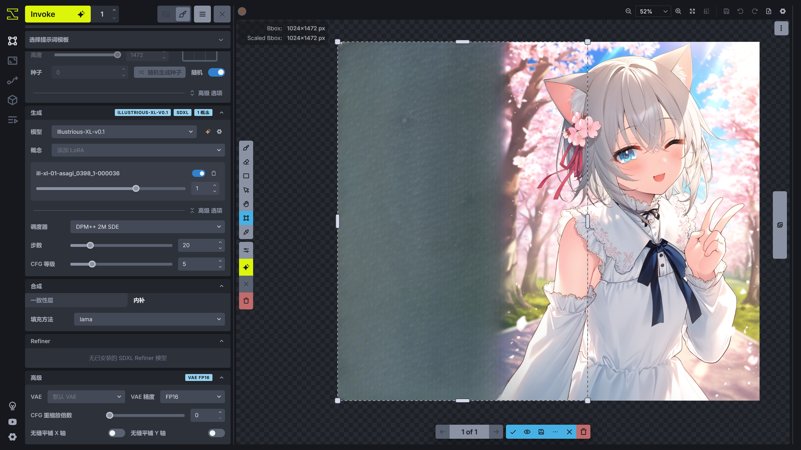

统一画布☍
InvokeAI 的统一画布拥有一个用于绘画的画布，并且包含一个强大的控制层，将 ControlNet、IP Adapter、分区提示词结合起来，和画布共同使用，使创作变得更加简单，下面将介绍 InvokeAI 统一画布的使用。
在使用之前，需要将 Invoke 按钮右侧的保存图片方式改为发送到画布。
Note
- 因为 InvokeAI 并没有像 Stable Diffusion WebUI / ComfyUI 那样的显存优化，作者所使用的 RTX 4060 Laptop 8G 无法在 InvokeAI 上运行 Stable Diffusion XL 的 ControlNet / IP Adapter，所以本篇讲解到涉及 ControlNet / IP Adapter 的操作时将使用 Stable Diffusion 1.5 的版本代替 Stable Diffusion XL 的版本。
- InvokeAI 许多功能使用按钮代替，如果不知道该按钮代表的功能，可以将鼠标移动到按钮上将显示按钮缩代表的功能名称。（善用 InvokeAI 的提示功能）
画布☍
在统一画布的中间部分为画布，左侧为生成参数的调整面板，右侧为图层和图库。
{kind=link}
左侧和右侧面板可以隐藏，可以按住面板之间的间隔处将左 / 右侧面板隐藏起来，或者按下 T / G 键将左 / 右侧面板隐藏，为画布腾出空间。
{kind=link}
在画布的左上角可以调整画笔的颜色、透明度和大小。
{kind=link}
因为此时画布中并没有一个栅格层（在 PhotoShop 中为图层），所以无法使用画笔在画布中进行绘制。这时可以在右侧的图层面板创建一个空的栅格层，或者从画廊中选择一张图片，右键打开菜单，选择从图像创建新画布 -> As 栅格层，此时图片将发送到画布中。
在图层面板的栅格图层选择该图片后，此时就可以在新建的栅格层进行绘画。
{kind=link}
画布顶部工具栏的两个 🔍︎ 按钮可以放大和缩小画布，或者可以使用鼠标滚轮进行画布的缩放。⛶（使图层适应画布）可以将画布缩放到合适屏幕的大小。⬜︎（将边界框适配到涂层）可以将用于进行 AI 生成的边界框框住所有的栅格层。当图片修改得差不多后，想把图片保存到图库中，可以点击 💾（将画布保存到图库）按钮。如果需要撤销 / 重做对画布内容的修改，可以点击 ↩︎（撤销）/ ↪︎（重做）按钮，或者使用 Ctrl + Z / Ctrl + Shift + Z 快捷键。
在画布的左侧设置了鼠标在画布中的功能，从上到下对应的功能如下。
| 功能 | 作用 | 对应的快捷键 |
|---|---|---|
| 刷子 | 使用画笔在画布中进行绘制。 | B |
| 橡皮 | 擦除画布中的内容 | E |
| 绘制方形 | 用于快速在画布中绘制方形色块。 | U |
| 移动模式 | 进入移动模式，可以移动画布中被选中的元素，如栅格图层中的某个图层或者修复遮罩中某个遮罩。 | V |
| 浏览模式 | 进入浏览模式，使用鼠标可以拖动画布的位置。 | H / 按住 Space |
| 边界框调整 | 调整边界框的位置，在 AI 进行生成时，将以边界框为界限进行生成。 | C |
| 吸色笔 | 吸取画布中某处的颜色并应用到画笔。 | I / 按住 Alt |
| 开关左侧参数栏 | 打开 / 关闭左侧的参数栏。 | T |
| 生成 | 点击后进行图片生成。 | Ctrl + Enter |
| 取消当前生成的项目 | 取消当前正在进行的生图任务。 | 无 |
| 清空所有生成项目 | 取消所有的生图任务。 | 无 |
在右侧的图层选中某一层后，右键画布可以看到处理该层的功能。
图层☍
在统一画布的右侧为图层，图层的选择和 PhotoShop 的图层选择类似，选中其中一层后可以在画布中编辑该层的内容。
{kind=link}
每种图层的工具栏包含快捷工具，有合并可见图层，显示 / 隐藏 修复遮罩 / 区域导向 / 栅格图层，创建 修复遮罩 / 区域导向 / 栅格图层。
在每种分类下的图层也包含几个开关，将鼠标移到开关上可以获得提示信息。
图层分为以下几种。
全局参考图像☍
该图层基于 IP Adapter，使用 IP Adapter 的功能对图像生成的画风和元素特征进行画风迁移。
IP Adapter 需要一张图片进行画风迁移，在添加全局参考图像图层后，点击 Upload an image 可以打开系统的文件管理器用于上传图片。或者从画廊的素材中拖动一张图片到画布中，此时 InvokeAI 将提示要发送图片到哪种图层，拖到 New Global Reference Image后将自动创建一个新的全局参考图像图层并将该图片导入该图层。
{kind=link}
修复遮罩☍
该图层用于设置重绘的区域，选中该层后，可以在画布中绘制用于局部重绘的遮罩，在进行生成时将对遮罩部分的内容进行重绘。
{kind=link}
如果需要设置遮罩部分的重绘幅度，可以在图层顶上的去噪强度选项设置。该值越高，遮罩部分的变化越大。
区域导向☍
这是用于设置分区提示词，对图片的不同部分设置不同的提示词，可以很好解决在全局提示词中无法准确描述各部分的元素导致元素污染的问题，并且该功能可以使 AI 绘制多人图变得简单。
在创建区域导向后，可以使用画笔绘制该部分提示词对应的区域。
{kind=link}
局部参考图像☍
局部参考图像和全局参考图像功能类似，都基于 IP Adapter 进行画风迁移，但是该功能仅针对区域进行画风迁移，可控性更高。
在添加局部参考图像图层后，点击 Upload an image 可以打开系统的文件管理器用于上传图片。或者从画廊的素材中拖动一张图片到画布中，此时 InvokeAI 将提示要发送图片到哪种图层，拖到 New Regional Reference Image后将自动创建一个新的局部参考图像图层并将该图片导入该图层。
{kind=link}
导入图像后，选中该图层，并使用画笔在画布中绘制该图层的蒙版，在生成的时候蒙版部分的内容将进行画风迁移。
{kind=link}
控制层☍
该层的功能基于 ControlNet，ControlNet 可以通过图像作为控制条件，和提示词一起控制图像的生成。
在添加控制层图层后，点击 Upload an image 可以打开系统的文件管理器用于上传图片。或者从画廊的素材中拖动一张图片到画布中，此时 InvokeAI 将提示要发送图片到哪种图层，拖到 New Control Layer后将自动创建一个新的控制层图层并将该图片导入该图层。
{kind=link}
创建一个控制层后，选择其中一个 ControlNet 模型，此时 InvokeAI 将根据选择的 ControlNet 模型的类型使用对应的 ControlNet 预处理器，对导入控制层的图片进行预处理。
{kind=link}
在下方的选择可以点击 Advanced 调整更多的预处理图片的参数，调整完成后点击 Apply 应用预处理结果，此时将使用处理后的图片作为控制层的控制条件。
{kind=link}
借助画布功能，可以对预处理后的图片再次进行编辑。
编辑完成后需要调整边界框的大小，按下 C 键进入边界框调整模式，将边界框包含在控制图片内。或者调整控制图片的大小，右键该图片，选择 Transfrom 进入缩放模式，将控制图片调整到在边界框内。
{kind=link}
下面是 InvokeAI 支持的 ControlNet 类型和对应的预处理器。
| ControlNet 类型 | 对应的预处理器 |
|---|---|
| Canny | Canny Edge Detection |
| Inpaint | 无 |
| MLSD | Line Segment Detection |
| Depth | Depth Anything |
| NormalMap | Normal Map |
| Segmentation | 无 |
| Lineart | Lineart Edge Detection |
| Lineart Anime | Lineart Anime Edge Detection |
| OpenPose | DW Openpose Detection |
| Scribble | Lineart Edge Detection |
| SoftEdge | HED Edge Detection |
| Shuffle | Content Shuffle |
| Tile | 无 |
| QRCode | 无 |
栅格层☍
这个就是 PhotoShop 中的图层了，当有不同的栅格层时可以选择其中一个栅格层进行修改，并且不会影响另一个栅格层。
可以创建一个空白的栅格层进行绘制，也可以从画廊的素材中拖动一张图片到画布中，此时 InvokeAI 将提示要发送图片到哪种图层，拖到 New Raster Layer后将使用该图片创建一个新的栅格层。
{kind=link}
图片变换(Transform)☍
如果需要对画布中某个图层进行大小调整或者方向调整，可以使用图片变换(Transform)功能。
{kind=link}
图片过滤(Filter)☍
图片过滤(Filter)会将图片使用预处理器 / 放大模型进行处理，处理后的图片可以用于控制层。
{kind=link}
元素选取(Select Object)☍
元素选取(Select Object)基于 Segment Anything，使用标记点对画布中的元素进行选取，绿色标点可以选取要包含在内的元素，红色标点将排除被选中的元素，绿色标点和红色标点可以在 Point Type 选项进行切换，标记点可以使用左键单击删除。
{kind=link}
将画布中的元素选择出来后，可以选择 Apply 将结果保存下来，此时遮罩中的元素将被保存下来，其他部分则被删除。如果只想保留其他部分，可以启用 Invert Selection。
除了可以利用这个功能进行抠图，还可以点击 Save As 将选择的结果保存为修复遮罩 / 区域导向，这样可以快速为画布中的元素绘制遮罩。
绘制模式☍
在画布中拥有一个边界框设置 AI 进行绘制的区域，并且边界框在图层中的所在位置、边界框内的内容和修复遮罩决定 InvokeAI 使用什么绘制模式进行图片生成。
{kind=link}
下面是 InvokeAI 不同的绘制模式。
文生图☍
{kind=link}
图生图☍
{kind=link}
局部重绘☍
{kind=link}
图片外扩☍
{kind=link}
修复遮罩和外扩内容处理☍
在使用修复遮罩对画布的内容进行局部重绘时，重绘之后的内容需要根据修复遮罩的区域重新补回原画布的内容中，可能重绘部分和非重绘部分会出现接缝的问题，但 InvokeAI 提供了对改部分的处理方法。
{kind=link}
通常默认设置就有比较好的效果，但可以根据需求进行调整，将鼠标移动到参数名称上可以显示参数作用的提示。
在外扩模式下，InvokeAI 将对空白区域进行填充，以进行图生图。
{kind=link}
下面将去噪强度设置为 0 后，观察不同填充方法对空白内容的填充。
| 填充方法 | lama | tile | cv2 | color | patchmatch |
|---|---|---|---|---|---|
| 效果图 |  |
{kind=link}
{kind=link}
{kind=link}
{kind=link}
{kind=link}
通常使用 patchmatch 填充方法效果比较好，具体哪种填充方法效果更好可自行尝试。
绘制内容缩放☍
在左侧面板中有个选项用于设置进行图生图时缩放边界框中的内容。
{kind=link}
当处理前缩放选择自动时，如果边界框的分辨率小于模型的推荐分辨率时，InvokeAI 将对边界框的分辨率缩放到适合模型进行生成的分辨率，进行图片生成后再将图片缩放回原来的分辨率。当边界框的分辨率大于模型的推荐分辨率时，InvokeAI 则不会对边界框的分辨率进行处理。下面举个例子。
{kind=link}
在画布的左上角显示了 Bbox 和 Scaled Bbox 的分辨率，此时边界框的分辨率为 384x512，也就是 Bbox 显示的值。当进行生图时，边界框中的图片将进行缩放，分辨率调整为 888x1184，也就是 Scaled Bbox 的值，模型将在 888x1184 这个分辨率下进行图生图。生成结束后，图片将缩放回原来的 384x512 分辨率再拼接回画布中。
通过自动缩放功能，可以使图生图的细节更多，质量更好。所以在使用图生图 / 局部重绘时，可以将边界框缩放到进行图生图的位置，再进行图片生成，这样可以获得更好的效果。
统一画布应用☍
统一画布中大致的功能已经介绍了，下面将演示使用统一画布进行创作。
使用统一画布生成一张图☍
下面是我使用的正向提示词。
1girl,solo,
cherry blossoms,hair flower,pink flower,hair ribbon,cat ears,animal ear fluff,grey hair,short hair,bangs,blue eyes,hair between eyes,eyebrows visible through hair,blush,closed mouth,neck ribbon,white dress,crease,frilled_collar,detached_sleeves,flat chest,
open mouth,smile,one eye closed,
standing,v,light smile,looking at viewer,
outdoors,blue sky,light rays,scenery,tree,flower,falling petals,blurry background,
upper body,close-up,
使用的反向提示词。
low quality,worst quality,normal quality,text,signature,jpeg artifacts,bad anatomy,old ,early,copyright name,watermark,artist name,signature
画布的边界框的宽高设置为 1024 x 1472，使用的调度器为 DPM++ 2M SDE，步数为 20，CFG等级 为 5。
使用的模型为 Illustrious-XL-v0.1，概念中添加 ill-xl-01-asagi_0398_1-000036 LoRA 模型。
现在就点击 Invoke 进行生成了，可以点几次生成几张图，此时 InvokeAI 在画布的底部提供生成结果选择，挑选一个最好结果后点击 ✓ 保存图片到画布中。
{kind=link}
修改元素☍
现在想让人物做出比心的动作，此时可以借助画笔进行简单涂鸦。在右侧的图层选中新的栅格层或者额外创建一个新的栅格层后，使用画笔在画布上简单画出人物比心的动作。
按下 B 键切换到画笔模式后，可以按住 Alt 键快速进入吸色笔模式吸取画面中元素的颜色，松开 Alt 键后自动切换回画笔模式，再进行涂鸦。
{kind=link}
涂鸦完成后，在右侧的图层面板添加一个修复遮罩并选择，使用画笔在涂鸦的部分绘制修复遮罩，遮罩需要把涂鸦的部分覆盖完全，并且范围尽可能大一点。
绘制修复遮罩完成后，将去噪强度设置为比较大的值，比如 0.7。
{kind=link}
提示词中关于人物动作的改成比心的动作。
1girl,solo,
cherry blossoms,hair flower,pink flower,hair ribbon,cat ears,animal ear fluff,grey hair,short hair,bangs,blue eyes,hair between eyes,eyebrows visible through hair,blush,closed mouth,neck ribbon,white dress,crease,frilled_collar,detached_sleeves,flat chest,
open mouth,smile,one eye closed, heart hands,
standing,light smile,looking at viewer,
outdoors,blue sky,light rays,scenery,tree,flower,falling petals,blurry background,
upper body,close-up,
现在就尝试 Invoke 生成图片，可以多次进行生成以挑选出效果比较好的图片。
{kind=link}
使用分区提示词强化提示词☍
现在人物的袖子不太对，原来的袖套的蕾丝边没有了。所以需要对袖套的黑边进行重绘。
在画布面板创建一个区域导向，在新建的区域导向点击Prompt添加提示词输入框，填上对蕾丝边的描述。
选中这个区域导向后，使用画笔在袖套上绘制区域导向的蒙版，再选择修复遮罩并绘制修复遮罩。
{kind=link}
现在再尝试 Invoke 生成图片。
{kind=link}
此时蕾丝边的效果就出来了。
扩图☍
现在想让原来的图片从竖图变成横图，此时就可以使用扩图的方式实现。
扩图需要对扩图区域进行画面描述，所以需要修改提示词，但是此时人物的部分还在图片外，所以先把人物通过扩图的方式绘制完整。
按下 C 键进入边界框调整模式，将画框向外移动，去噪强度可以适当提高，在左侧面板选项中，填充方法选择 patchmatch。
{kind=link}
此时尝试几次 Invoke 进行图片外扩，选择比较好的结果。
{kind=link}
这里选择了一个比较好的结果，但是有些瑕疵，这时可以利用之前的方法进行修复。
同理，画面的右边也是一样的处理方式。
{kind=link}
人物通过外扩的方式绘制完整了。现在需要修改提示词描述外扩部分的内容。
no humans,
outdoors,blue sky,light rays,scenery,cherry blossoms,tree,flower,falling petals,blurry background,
upper body,close-up,
用同样的方法进行图片外扩。
{kind=link}
此时原来的竖图通过外扩的方式变成了横图。
Note
直接在空白区域进行扩图可能效果不太好，可以尝试在空白区域进行简单的涂鸦，在绘制修复遮罩对涂鸦部分进行重绘，也可以实现扩图的效果。
面部细化☍
InvokeAI 在边界框小于模型推荐分辨率的时候会进行缩放处理，处理后的细节将会提高。可以利用这个功能的特点进行面部细化。
将边界框缩小到面部的位置，提示词修改为描写边界框内的内容。
1girl,solo,
cherry blossoms,hair flower,pink flower,hair ribbon,cat ears,animal ear fluff,grey hair,short hair,bangs,blue eyes,hair between eyes,eyebrows visible through hair,blush,open mouth,lace trim,lace,black lace trim,
使用较低的去噪强度值，防止原来的画面没有较大的改动。
{kind=link}
如果出现接缝问题，在对面部重绘完成后，使用修复遮罩在接缝处绘制蒙版，进行一次重绘修复接缝问题。
Note
因为边界框的边界并不会应用一致性层的配置效果，所以会导致重绘后出现边界，所以另一种方法是在原来的边界框内绘制修复遮罩，但是修复遮罩不要画到边界框的边界，此时再进行 Invoke 就不容易出现接缝问题了。
{kind=link}
现在这张图片就比较完美了，如果在这张图片的外围有涂鸦的痕迹，可以在栅格图层中找到涂鸦对应的栅格层并禁用，此时就可以点击画布顶部工具栏的 💾（将画布保存到图库）按钮，将创作的图片保存到图库中。
绘制多人图☍
通常情况下仅靠普通的提示词可能会出现特征混淆的问题，但通过分区提示词（区域导向）可以很好的解决这个问题。
这是左侧面板的提示词，描述的画面有 2 个人，简单的动作和场景。
2girls,
yuri,eye contact,princess carry,
outdoors,park,flower,path,river,blue flower,
upper body,close-up,
masterpiece,best quality,newest,amazing quality,very aesthetic,absurdres,
在右侧画布中创建 2 个区域导向，点击 Prompt 创建正向提示词输入框，分别对人物特征和动作进行描述。
cute,cherry blossoms,hair flower,pink flower,hair ribbon,cat ears,animal ear fluff,grey hair,short hair,bangs,blue eyes,hair between eyes,eyebrows visible through hair,blush,white shirt,white sailor collar,red bow,pink cardigan,very long sleeves,red bowtie,light blue skirt,pleated skirt,flat chest,white thighhighs,
smile,standing,holding person,eye contact,affectionate,open mouth,
cute,long hair,silver hair,blue hair,(medium hair:0.6),single hair intake,braided,purple eyes,hair ornament,white shirt,collared shirt,purple bow,purple bowtie,short sleeves,small breasts,shirt tucked in,black skirt,white thighhighs,
eye contact,smile,closed mouth,
并在画布中绘制 2 个区域导向的蒙版。
{kind=link}
现在尝试 Invoke 几次，选取比较好的生成结果。

现在图片有些小瑕疵，使用修复遮罩、区域导向进行修复。
{kind=link}
调整好参数后多 Invoke 几次，选择比较好的效果图。

现在瑕疵的部分修复好了，可以再细化一下面部的细节。将边界框缩小到面部的部分，再绘制修复遮罩，注意修复遮罩不要超过边界框，不然可能在边界框出现衔接问题。
调整一下去噪强度，不要太高。

多 Invoke 几次，挑选比较好的结果。

现在效果就比较好了。
使用元素选取(Select Object)进行抠图☍
利用类似 PS 的方式也可以绘制多人图，这里分别使用 2 组提示词来生成人物。
1girl,solo,cute,ahoge,silver hair,blue hair,gradient hair,sidelocks,single drill,side ponytail,straight hair,blue scrunchie,scrunchie,purple eyes,collared shirt,white shirt,blue cardigan,blue sweater,blue jacket,black jacket,open jacket,long sleeves,sleeves past wrists,pleated skirt,black skirt,
wariza,looking at viewer,head tilt,
simple background,white background,
front view,
masterpiece,best quality,newest,amazing quality,very aesthetic,absurdres,
1girl,solo,cute,loli,cherry blossoms,hair flower,pink flower,hair ribbon,cat ears,animal ear fluff,grey hair,short hair,bangs,blue eyes,hair between eyes,eyebrows visible through hair,blush,white shirt,white sailor collar,red bow,pink cardigan,very long sleeves,red bowtie,light blue skirt,pleated skirt,flat chest,white thighhighs,
sitting,knees up,looking at viewer,hugging own legs,parted lips,
simple background,white background,
front view,
masterpiece,best quality,newest,amazing quality,very aesthetic,absurdres,
现在先用第一组提示词生成一张图。
{kind=link}
生成后将边界框移动到画布空白的地方，再更换成第二张提示词生成图片。

此时就有了两张图片，现在在右侧的栅格图层中选择其中一张图片，右键打开菜单，选择 Select Object。

打开后在下方将显示元素选取(Select Object)的菜单，Point Type可以选择标记点的模式，将Point Type选择成Include，在人物上点击以添加绿色标记点，标记后可以将人物部分抠出来，并且使用半透明蓝色蒙版标记出来。
{kind=link}
点击 Save As 后选择新建 栅格层，这样就可以把人物抠出来单独使用一个栅格层进行保存，另一张图片也是同样的操作。抠出来后将原来带有背景的栅格层禁用，就可以看到抠出来的人物了。
{kind=link}
使用图片变换(Transform)调整栅格层☍
现在将原来抠出来的人物所在的栅格层移动到源图的栅格层和抠出来的椅子的栅格层之间，在右侧图层面板的栅格图层中进行操作，选中一个栅格层后进行拖动。

然后选择包含抠出来的人物的栅格层，右键选择 Transform 调整该栅格层的大小，在 Transform 面板中将 Isolated Preview 禁用，这样可以看到调整后的效果。
如果移动不平滑，可以在右上角点击 ⚙ 按钮打开画布的设置，将固定到画布网格(Snap to Grid)关闭，这样就能平滑移动栅格层了（移动完成后建议重新打开）。

现在还缺少一个背景，可以再生成一张背景图后移动到人物所在的栅格层后面。不过我这里打算使用纯色背景，在右侧的栅格图层创建一个新的栅格层，并将新建的栅格层移动到包含人物的栅格层的下方，再按下键盘的 U 键切换到矩形(Rectangle)画笔，在左上角的调色板调节好合适的颜色后，绘制纯色背景。
{kind=link}
这样大概的图片结构就有了，再修改一些不合理的地方即可。
细化☍
使用前面的修改元素、使用分区提示词强化提示词、面部细化的方法修改图片。
在右侧创建两个区域导向，分别填入描述人物的提示词，再绘制对应人物的蒙版。
cute,ahoge,silver hair,blue hair,gradient hair,sidelocks,single drill,side ponytail,straight hair,blue scrunchie,scrunchie,purple eyes,collared shirt,white shirt,blue cardigan,blue sweater,blue jacket,black jacket,open jacket,long sleeves,sleeves past wrists,pleated skirt,black skirt,
wariza,looking at viewer,head tilt,
cute,loli,cherry blossoms,hair flower,pink flower,hair ribbon,cat ears,animal ear fluff,grey hair,short hair,bangs,blue eyes,hair between eyes,eyebrows visible through hair,blush,white shirt,white sailor collar,red bow,pink cardigan,very long sleeves,red bowtie,light blue skirt,pleated skirt,flat chest,white thighhighs,
sitting,knees up,looking at viewer,hugging own legs,parted lips,
再将左边的提示词修改一下。
2girls,yuri,hug,
simple background,pink background,
front view,
masterpiece,best quality,newest,amazing quality,very aesthetic,absurdres,
{kind=link}
用画笔将人物缺失的部分简单涂鸦一下，再绘制修复遮罩，将去噪强度调整成比较高的值，再点击 Invoke 生成，选择比较好的结果。

{kind=link}
现在可以注意到边界框外部有多余的背景，可以在栅格图层找到之前包含纯色背景的栅格层并禁用。

利用涂鸦和修复遮罩可以将人物的动作进行修改。这里有个技巧，要进行涂鸦时先创建一个新的栅格层，在新建的栅格层上再进行涂鸦，这样可以保护原来的图层不被修改（在使用 PhotoShop 时类似的方法很常用，可以用来保护原图层），对涂鸦的部分使用修复遮罩进行重绘后，可以把原来包含涂鸦的栅格层禁用。

{kind=link}
重绘的结果可能会有瑕疵，此时可以先保存重绘的结果，再进行图片重绘来细化。
{kind=link}
人物的边缘还包含抠图产生的锯齿，并且头发部分也残留部分原来的背景，可以通过涂鸦和修复遮罩进行去除。还有两个人物之间衔接部分也可以通过这个方法去细化。
{kind=link}

对于面部的细化，可以将边界框缩小到面部的范围，再绘制修复遮罩，使用较低的去噪强度细化面部。
{kind=link}
{kind=link}
手部细化也是可以用和面部细化一样的方法去处理。

现在图片的效果就比较了，可以点击顶部的保存按钮将图片保存下来。

这张我是真喜欢~
背景替换☍
前面的那张图片是纯色背景的，现在我想把背景替换一下，
此时可以选择该图片的栅格层，右键画布，使用元素选取(Select Object)功能将图片的人物选取出来。

因为现在需要替换背景，所以将选择结果进行反选，启用 Invert Selection 后原来的结果将进行反选。

此时点击 Save As 将选择结果保存为修复遮罩。将去噪强度设置为 1，再对画面进行描述。
2girls,yuri,hug,heads together,
outdoors,scenery,park,on grass,flowers,grass,tree,under tree,cherry blossoms,near river,bug,butterfly,pink butterfly,day,blue sky,
front view,
masterpiece,best quality,newest,amazing quality,very aesthetic,absurdres,
{kind=link}
现在尝试 Invoke 将原图的背景进行重绘。
{kind=link}
可以看到原来的背景已经替换，并且原来图片中的人物还保持着原来的样子。
但是会发现人物边缘似乎多了另一个人物的影子，这时因为对画面进行描述的提示词中包含了人物的描述，并且去噪强度很高，所以模型生成了一个人，但是人物的位置发生了偏移。
这时可以删去提示词中关于人物的描述，这种问题就可以得到缓解，或者可以尝试使用控制层控制人物，使人物的位置不发生偏移。
这里元素选取(Select Object)功能将图片的人物选取出来，点击 Save As 将选取结果保存到控制层中。
在刚刚新建的控制层选择 Multi-Guidance Detection (Union Pro) 模型（如果没有就在 InvokeAI 的模型管理的初始模型中下载），再右键该控制层，选择 Fitter，将保存到控制层的图片进行预处理。
{kind=link}
Fitter Type 选择 Canny Edge Detection。
{kind=link}
将预处理图片的结果点击 Apply 进行应用。

现在在尝试 Invoke 进行生成。
{kind=link}
现在可以发现原来的问题得到了很好的解决。
线稿上色与风格迁移☍
这里有一张白色的线稿，准备用于上色，一张图片用于保持人物一致性，另一张图片用于画风迁移，此时可以借助统一画布的控制层和区域导向实现线稿上色和画风迁移。
| 线稿 | 用于保持人物一致性 | 用于迁移画风 |
|---|---|---|
| ! |
{kind=link}
{kind=link}
{kind=link}
将这 3 张图片拖到 InvokeAI 中，导入画廊的素材中。将线稿图拖到画布中，此时 InvokeAI 弹出提示要导入哪种图层类型，这里拖到 New Control Layer中创建一个新的控制层。
{kind=link}
这里先调整边界框的大小，调整好后在右侧的图层面板中选择刚刚新建的控制层，右键打开菜单，选择图片变换(Transform)缩放线稿到边界框中。

缩放完成后点击 Apply 将结果应用，在控制层的模型选项中选择 Multi-Guidance Detection (Union Pro) 模型。
Note
如果没有模型，需要在 InvokeAI 的模型管理的初始模型选项下载 Multi-Guidance Detection (Union Pro) 模型。
再右键该控制层，选择 Fitter，将保存到控制层的图片进行预处理。Fitter Type 选择 Lineart Edge Detection，再点击 Apply 保存预处理结果。
{kind=link}
接下来将用于保持人物一致性和迁移画风的图片分别拖动到画布中，并拖到 New Regional Reference Image 中，为需要保持人物一致性的部分和迁移画风的部分绘制区域导向的蒙版。
{kind=link}
Note
区域导向所需的模型需要在 InvokeAI 的模型管理的初始模型选项中下载，对应的模型名称为 Standard Reference (IP Adapter ViT-H)。
绘制蒙版完成后，调整控制层和区域导向的参数，再填写提示词。
1girl,solo,cherry blossoms,hair flower,pink flower,hair ribbon,cat ears,animal ear fluff,blue eyes,grey hair,short hair,bangs,hair between eyes,eyebrows visible through hair,blush,closed mouth,neck ribbon,white dress,crease,frilled_collar,detached_sleeves,flat chest,
holding sword,looking at viewer,dynamic pose,
battoujutsu stance,motion blur,sword,battoujutsu stance,bamboo forest,
upper body,
masterpiece,best quality,newest,amazing quality,very aesthetic,absurdres,
{kind=link}
调整参数后尝试几次 Invoke，从中挑选一个比较好的结果。
{kind=link}
现在可以看到线稿已经上色了，并且画风成功迁移到上色后的图片中。
其他应用☍
InvokeAI 官方发布了许多关于 InvokeAI 的基础教学视频，在 InvokeAI 左下角的按钮可以查看。
{kind=link}
除了基础教学视频，InvokeAI 还发布许多实际应用的视频，可在 InvoeAI 官方的视频号进行查看：Invoke - YouTube。
InvokeAI 官方的说明文档：